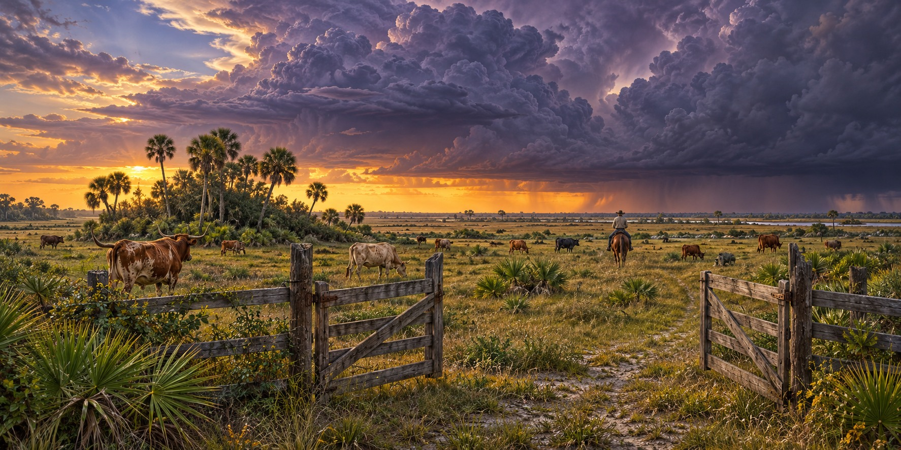

Hurricanes and the Florida Cattle Industry
Florida Ranching Traditions and the Work of Storm Recovery

Cattle were important to early Seminole communities, and the name Cowkeeper is part of that history. Florida ranching traditions developed across centuries of changing settlement, land use and markets. Hurricanes were one recurring challenge in a landscape where heat, wetlands and seasonal water also shaped how people kept livestock.
An Industry Older Than the State Itself
Florida cattle ranching draws on practices brought by Spanish settlers and adapted by later communities. Cattle supplied food, hides and trade, and during the Civil War Confederate forces organized a “Cow Cavalry” to help protect herds. The industry’s history is closely tied to access across open land.
The 2004 Storm Season
The 2004 hurricanes damaged ranch fencing, buildings and pasture. A storm could leave cattle alive but break the boundaries that kept them away from roads. Fence material, feed, fuel and equipment became urgent recovery supplies.
Cattlemen’s organizations, extension staff and public agencies have helped coordinate relief after major storms. Such networks matter because ranch work continues even when ordinary suppliers, roads and power systems are disrupted.
Planning Access to Safe Ground
Historic open-range practices do not provide one universal modern storm plan. UF/IFAS recommends planning suitable higher ground, water and feed and keeping cattle securely contained. Decisions about gates and paddocks depend on the property; opening a boundary can expose livestock and motorists to danger.
The Work After Ian
After Ian in 2022, accounts from the Longino Ranch described flooded pasture and the long work of repairing fences and caring for cattle. Even when much of a herd survives, recovery can demand new feed, repeated inspections and repairs across a large property.
More Storms, More Repair
Idalia and the 2024 hurricanes brought further damage to agricultural communities. Regional economic exposure is different from measured loss: the annual value of cattle production in a storm’s path does not establish how much the storm destroyed.
What Three Centuries of Storms Have Not Stopped
A ranch’s recovery is measured in daily care as well as repaired structures. Cattle still need safe water, suitable feed and secure pasture while families rebuild. The history of Florida ranching shows repeated adaptation, but each new storm asks for work and resources rather than resilience alone.
Quick Facts
| Civil War | “Cow Cavalry” organized to protect Confederate herds |
|---|---|
| Pre-storm technique | Plan secure higher ground, water and feed for the specific ranch |
Did You Know?
A Seminole leader’s name, Cowkeeper, reflects how central cattle were to early Seminole life.
Florida once had a Confederate “Cow Cavalry” to guard cattle herds.
Vocabulary
Open range: land where cattle roam unfenced.
Cracker cattle: a hardy breed descended from Spanish cattle, adapted to Florida.
Doubloon: a Spanish gold coin.
Discussion Questions
1. Why must a storm plan consider both higher ground and secure boundaries?
2. What does the industry’s history say about how it handles storms?
Related Articles
FLH-0024 — The Day the Wind Took the Barn
FLH-0022 — Surviving a Storm in a Cracker Cabin
FLH-0008 — Hurricane Charley (2004)
FLH-0035 — When the Orange Groves Blew Away
FLH-0039 — Recovering a Ranch After a Hurricane
Sources
Florida Memory. “Florida Cattle Ranching — Earliest American Ranchers.” State Library and Archives of Florida. floridamemory.com
Farm Progress. “Florida Cattle Ranchers Take Direct Hit from Hurricane Charley.” farmprogress.com
NPR. “Hurricane Ian Has Hobbled Florida’s Agriculture Industry.” (Cliff Coddington). npr.org
WUSF Public Media. “Florida Agriculture Has Been Slammed by Hurricane Ian.” wusf.org
American Farm Bureau Federation, Market Intel. “Hurricane Helene Devastates Rural Southeast.” fb.org
UF/IFAS — Hurricane preparedness for forage crops